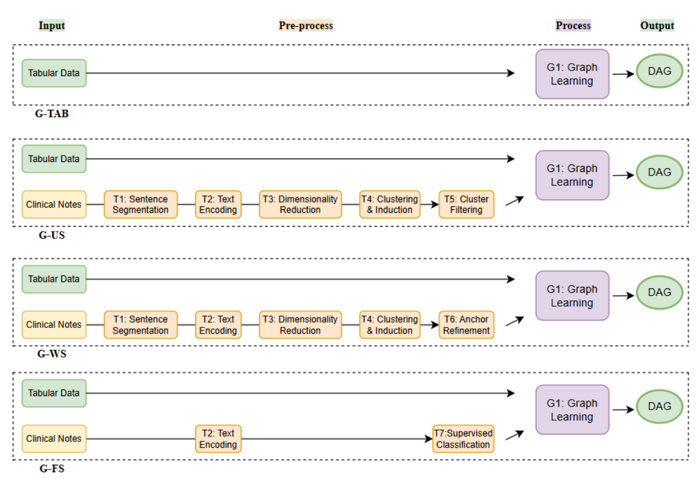

G-TAB
Uses full structured symptom variables. This is the upper-bound setting.
NLP · Causal Discovery · Clinical Text
A visual project summary comparing tabular, unsupervised, weakly supervised, and supervised text workflows for causal graph discovery.

In real clinical settings, symptom information is often written in free-text notes instead of clean structured fields. This project explores whether those notes can help recover causal symptom–disease graphs when structured symptom labels are missing.
The project uses the SimSUM dataset, which contains tabular variables, clinical notes, and a known gold-standard causal DAG for evaluation.

Uses full structured symptom variables. This is the upper-bound setting.
Uses unsupervised clustering to induce symptom-related variables from text.
Uses weak symptom anchors to guide cluster selection without patient-level labels.
Uses supervised symptom classification with different label fractions.

Weak supervision substantially improves over unsupervised clustering, while partial supervised labels provide a strong label-efficiency trade-off.
Structured symptom variables remain the strongest signal, but lightweight semantic guidance can make clinical text useful for causal graph discovery.